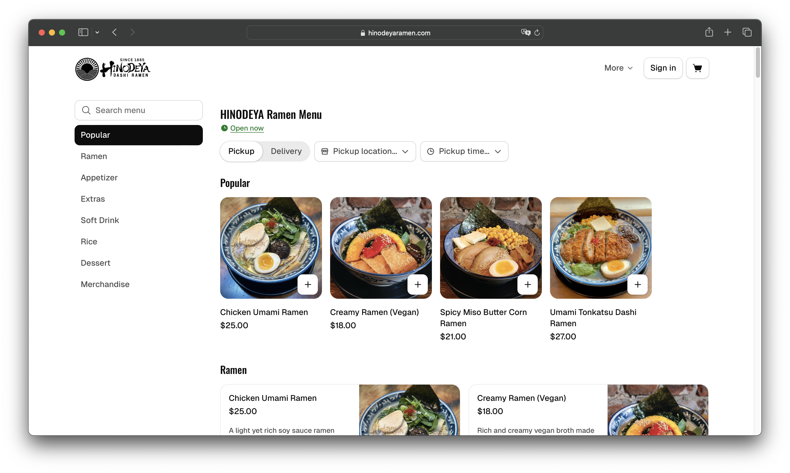
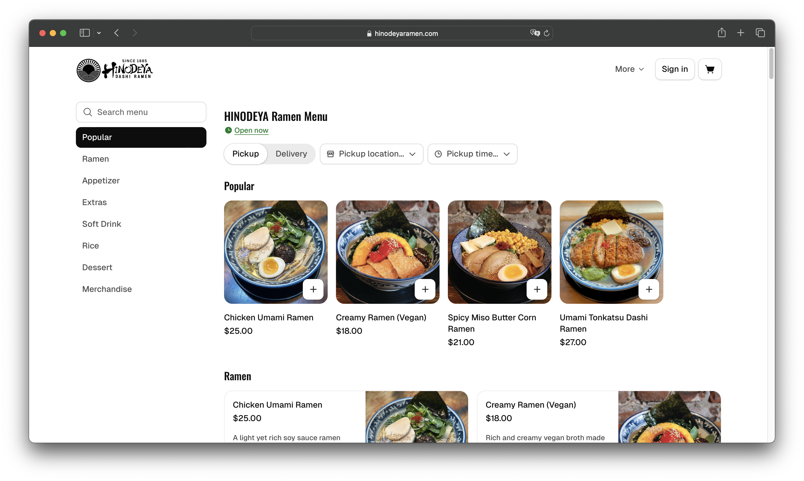
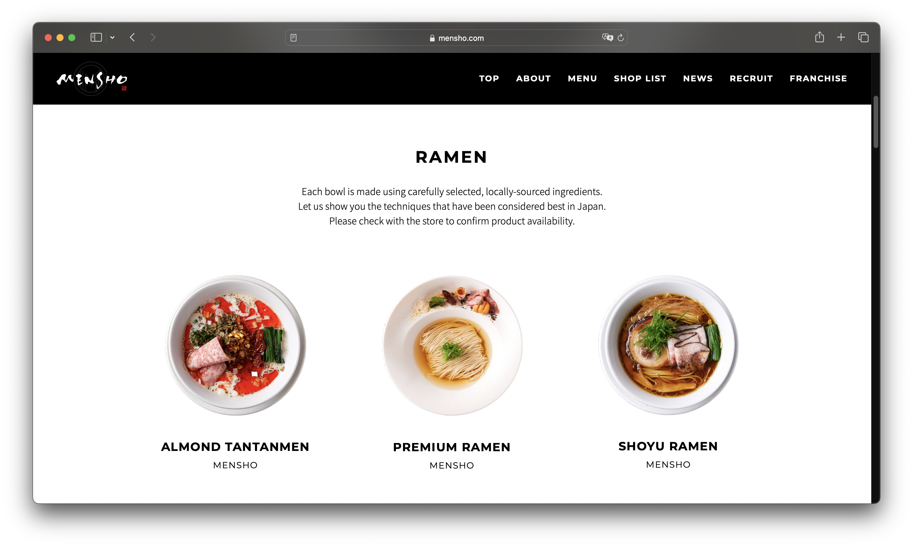
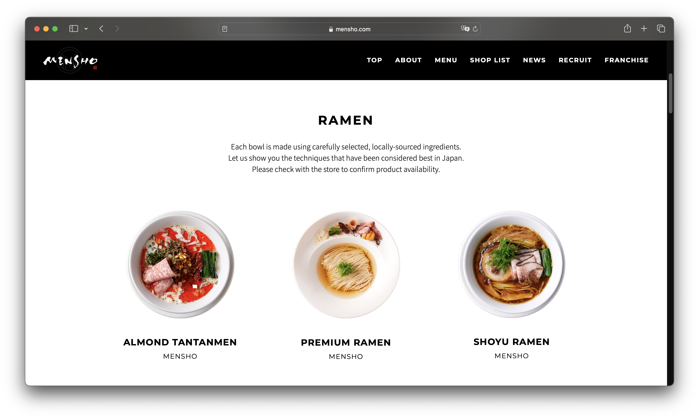
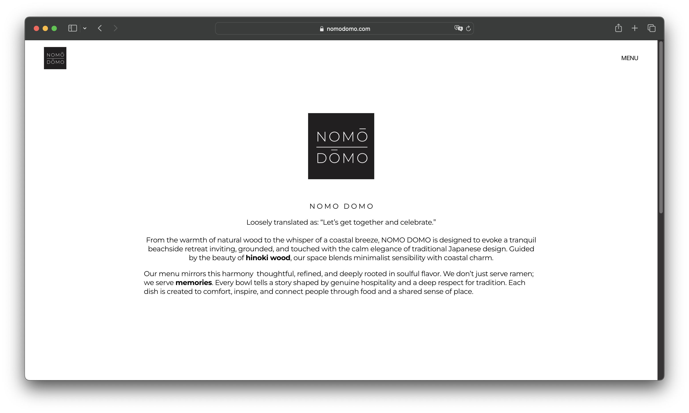
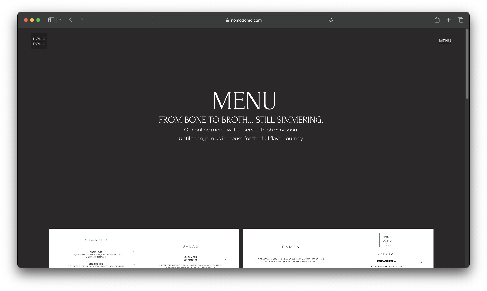

Final project proposal
Introduction
Eien Ramen
A restaurant that specializes in ramen and other Japanese noodle dishes.
Target audience
The people using this site are customers and potential customers who want to know more about Eien Ramen, what food it serves, and where it is located.
Their main goals are to look through the menu to find what food items they like and see where the shop is located. They may also want to look into the history and goals of the shop.
Comparative analysis
HINODEYA Ramen
 

Mensho
 

Nomo Domo
 Website content
Home
Eien Ramen. Everlasting flavor.
[Bowl of ramen showing different ingredients]
Menu
Ramen
[A bowl of ramen.]
Shio
17.50
sea salt-base
Shoyu
16.95
soy sauce-base
Miso
17.95
fermented soybean paste
Vegetarian Creamy
16.50
soybean-kombu seaweed broth
Shoyu
16.95
soy sauce-base
Other Noodles
[A bowl of udon.]
Tempura Udon
16.95
udon noodles with shrimp and vegetable tempura
Zaru Soba
16.95
cold buckwheat noodles
About
Our Story. Eien Ramen was founded in San Luis Obispo in February 2026. "Eien" means eternity. We aim to serve meals that put everlasting smiles on the faces of those who eat them. Our housemade noodles, specially-picked ingredients, and carefully-crafted broth ensure that each slurp brings you closer to "eternity."
[Ingredients for noodle dishes.]
[Noodles being prepared in a kitchen.]
Location
Find us on Noodle Way in Downtown SLO.
123 Noodle Way, San Luis Obispo, CA 93405.
[Front entrance of a noodle shop.]